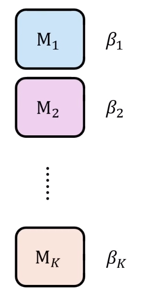
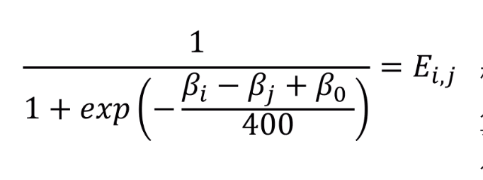
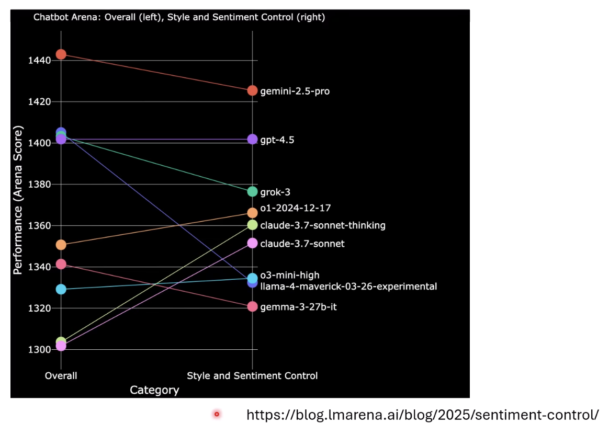

課程來源：李宏毅老師【生成式AI時代下的機器學習(2025)】第九講
（註：本篇筆記之知識內容及輔助圖片皆整理自李宏毅老師於YouTube之公開課程影片與簡報。）
模型的評分系統
隨著各個大型語言模型推陳出新，要如何客觀的判斷模型能力？
傳統的測試方法
目前主流的方法，是直接執行數學或程式問題等難題測試進行評估。這種方式簡單粗暴並直觀。然而，這些高分的背後，有可能模型作弊「記憶」出來的。
對常用的數學測試題目GSM8K進行實驗，在不影響題目難度的前提下，微調題目中的數字或符號。結果大多數的模型正確率明顯的下降，可證明大多數的模型都有稍微記憶到題目[1]。
在無法確定模型是否曾經在訓練時看過解答的情況下，這些測試的準確率不一定可靠。
其他測試方法
-
ARC-AGI
ARC-AGI[2]是一種不直觀的圖形邏輯推理測試。
過去五年內，許多測試很快就被模型過度擬合，但ARC-AGI因為其複雜的題目保持有用。
在OpenAI的o3釋出時，也有特別宣傳其在ARC-AGI中的能力。能力甚至超過了一般人類（雖然每次進行這種生度運算需要消耗約1000美元）。
即是是這麼困難的題目，只要有固定的出題機制，以及開發者放出的例題，就能利用已釋出的範例製造出更多的模擬題，給模型刷題練習。因此，還是不能確保模型在測試時，是運用自身的能力還是刷題經驗作答。
-
Chatbot Arena：
既然基本的考卷會被破解，那麼讓人類擔任面試官就不能刷題了吧？Chatbot Arena的機制就是讓使用者（人類）提出問題，給予兩種模型同時提供回覆，由人類選出比較佳的模型。
看似非常公平，但人類其實在選擇回答上也有傾向（例如喜歡較多粗體字、表情符號等）。也就是說，模型內容差異不多的情況下，人類可能會因為「輸出風格」的不同來給分。
解決方式：Elo Score
為了解決這個問題，引入競技遊戲中常用的Elo Score系統。
根據下圖，假設有k個模型Ｍ，每個模型的戰力是β：

在兩模型評比時，透過以下的公式計算出彼此的勝率E：

注意的是，特別在公式中加入β0，代表設定一個數值包含實力以外的所有因素。透過這個值可消去其他因素的影響。
取得勝率Ｅ後，即可反推出每個模型的戰力。
下圖為實驗結果，可證明，有沒有考慮風格帶來的影響，結果差異會非常大。例如Claude不太會講好聽話，所以原本排名比較低，去掉這些因素後，能力明顯上升。

個人結論：
以上評分系統的發展歷程，很好的表現了著名的定律Goodhart’s Law：「當一項指標被當成追求的目標時，它就不再是一個好指標」。
我的想法跟老師在課堂中說的一樣，這麼在意評分系統做什麼呢？它只會把模型的努力異化掉的。